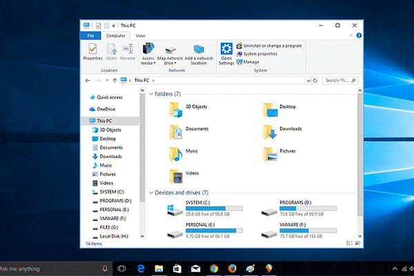
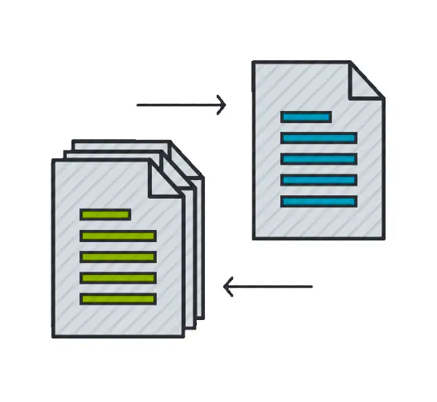

AULA 5
Organizando Arquivos e Pastas no Windows
Nesta aula, vamos aprender a organizar seus arquivos e pastas no Windows, como se fosse um armário super arrumado para suas coisas digitais!
Explorador de Arquivos: Seu Organizador Pessoal
O **Explorador de Arquivos** é a ferramenta do Windows que te ajuda a ver, encontrar e organizar todos os seus arquivos e pastas. Pense nele como uma biblioteca onde cada prateleira é uma pasta e cada livro é um arquivo.
- Como Abrir: Você pode clicar no ícone de pasta amarela na Barra de Tarefas ou pesquisar por "Explorador de Arquivos" no Menu Iniciar.
- Navegação: No lado esquerdo, você vê as principais pastas (Documentos, Imagens, Downloads, etc.) e seus discos. No lado direito, o conteúdo da pasta que você selecionou.
- Estrutura de Pastas: É como uma árvore. Você tem pastas principais e, dentro delas, pode criar subpastas para organizar ainda mais.


Criando e Gerenciando Pastas e Arquivos
Aprender a criar e organizar é fundamental para não se perder nos seus documentos digitais:
- Criar Nova Pasta: No Explorador de Arquivos, clique com o botão direito do mouse em um espaço vazio e escolha "Novo" > "Pasta". Dê um nome claro!
- Renomear: Clique com o botão direito no arquivo ou pasta e escolha "Renomear".
- Mover e Copiar:
- Mover: 'Arrastar e soltar' o arquivo/pasta para a nova localização. Ele sai do lugar original.
- Copiar: Clique com o botão direito, escolha "Copiar", vá para a nova pasta, clique com o botão direito e escolha "Colar". O arquivo fica nos dois lugares.
- Apagar e Lixeira: Clique com o botão direito e escolha "Excluir". O arquivo vai para a Lixeira, onde você pode recuperá-lo se precisar, antes de esvaziá-la.